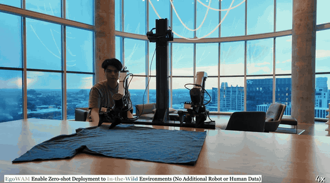

|
Xinchen Yin I'm a second year Master student in Robotics at Georgia Tech, advised by Prof. Danfei Xu. I am grateful for the mentorship of Prof. Hua Chen during my undergraduate studies at the ZJU-UIUC Institute. During my time at UIUC, I had the valuable opportunity to collaborate with Prof. Yunzhu Li, Shivansh Patel, and Wenlong Huang. I also had the pleasure of working with Prof. Gaoang Wang at the ZJU-UIUC Institute. I am actively seeking industrial research positions and PhD opportunities beginning in Fall 2027. Feel free to reach out if you think I'd be a good fit! Email (xyin85 [AT] gatech.edu) / Twitter / Github / LinkedIn |
{kind=link}
ResearchI care most about scalable learning-based methods for robot manipulation. I'm a full-stack roboticist, working across the entire stack from hardware and data collection to policy learning, simulation, and real-world deployment. I'm also focusing on how to best utilize foundation models for robots. My long-term goals are (1) to enable robots to learn efficiently from Internet-scale data, and (2) to equip robots with human-level manipulation ability. |
|
 |
Baoyu Li*, Xinchen Yin*, Mengying Lin, Yixin Zhang, Danfei Xu Under review, 2026 project / arXiv |
|
|
Yangcen Liu, Shuo Cheng, Xinchen Yin, Woo Chul Shin, Alfred Cueva, Yiran Yang, Zhenyang Chen, Chuye Zhang, Danfei Xu Under review, 2026 project / arXiv |

|
Shivansh Patel*, Xinchen Yin*, Wenlong Huang, Shubham Garg, Hooshang Nayyeri, Li Fei-Fei, Svetlana Lazebnik, Yunzhu Li ICRA, 2025 CoRL LEAP and LangRob Workshop 2024 project / arXiv |
|
Website's template from Jon Barron. Thanks for stopping. |